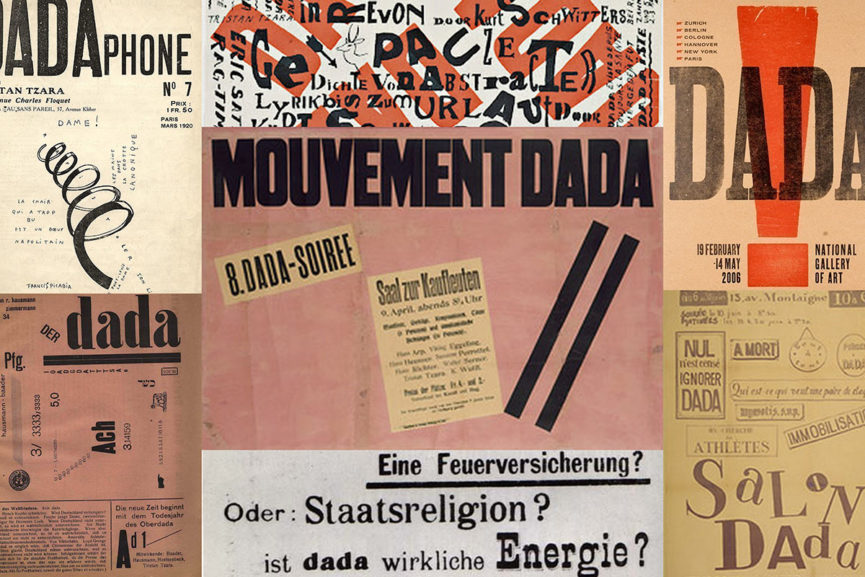

menu
web
En litterær og kunstnerisk bevægelse der dyrkede det meningsløse i tilværelsen, og alt hvad der reelt ingen mening gav. Dadaismen udfordrede både sproget, billedæstetikken og det etablerede samfund.

redesign